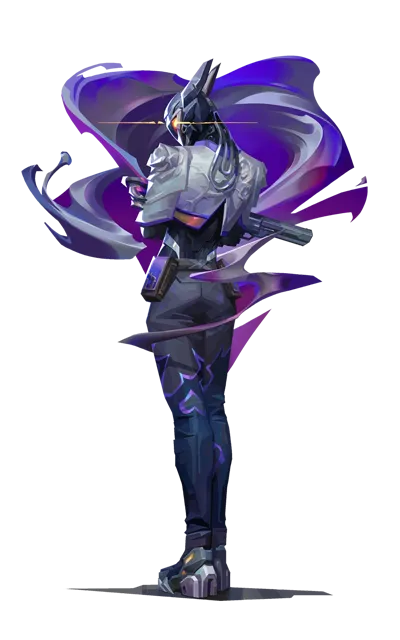

Bienvenidos al Rincón de Vyse
Tu fuente de noticias, estrategias y análisis sobre Valorant. Explora guías, debates y contenido exclusivo sobre el shooter táctico de Riot Games.

Tu fuente de noticias, estrategias y análisis sobre Valorant. Explora guías, debates y contenido exclusivo sobre el shooter táctico de Riot Games.